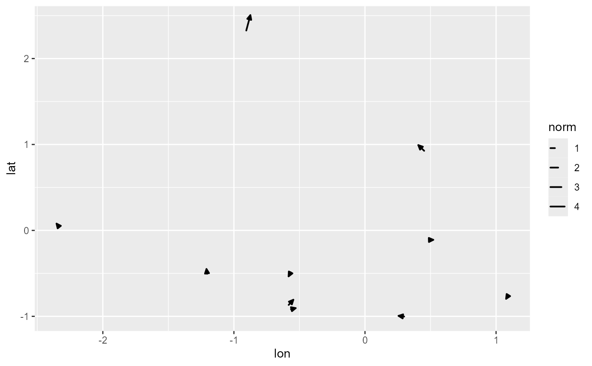
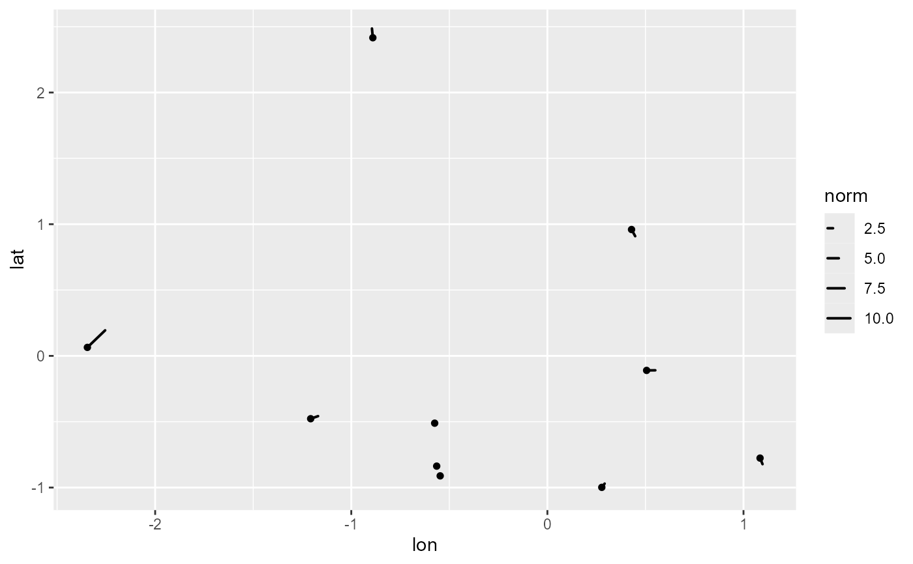

geom_vector2 and stat_vector2 are extensions of geom_vector and stat_vector.
These functions provide identical functionality but change the default behavior
to map the vector norm (magnitude) to the length aesthetic instead of color.
Usage
geom_vector2(
mapping = NULL,
data = NULL,
stat = StatVector,
position = "identity",
...,
na.rm = FALSE,
show.legend = NA,
inherit.aes = TRUE,
center = FALSE,
tail_point = TRUE,
arrow = NULL
)
stat_vector2(
mapping = NULL,
data = NULL,
geom = GeomVector,
position = "identity",
...,
na.rm = FALSE,
show.legend = NA,
inherit.aes = TRUE,
center = FALSE,
tail_point = TRUE,
arrow = NULL
)Arguments
- mapping
Aesthetic mappings created by
aes()oraes_(). These functions ensure thatlength = after_stat(norm)is mapped by default, andcoloris set toNULLunless otherwise specified.- data
The data to be displayed in this layer. There are three options:
If
NULL, the default, the data is inherited from the plot data as specified in the call toggplot().A
data.frame, or other object, will override the plot data. All objects will be fortified to produce a data frame. Seefortify()for which variables will be created.A
functionwill be called with a single argument, the plot data. The return value must be adata.frame, and will be used as the layer data. Afunctioncan be created from aformula(e.g.~ head(.x, 10)).- stat
The statistical transformation to use on the data for this layer. When using a
geom_*()function to construct a layer, thestatargument can be used the override the default coupling between geoms and stats. Thestatargument accepts the following:A
Statggproto subclass, for exampleStatCount.A string naming the stat. To give the stat as a string, strip the function name of the
stat_prefix. For example, to usestat_count(), give the stat as"count".For more information and other ways to specify the stat, see the layer stat documentation.
- position
A position adjustment to use on the data for this layer. This can be used in various ways, including to prevent overplotting and improving the display. The
positionargument accepts the following:The result of calling a position function, such as
position_jitter(). This method allows for passing extra arguments to the position.A string naming the position adjustment. To give the position as a string, strip the function name of the
position_prefix. For example, to useposition_jitter(), give the position as"jitter".For more information and other ways to specify the position, see the layer position documentation.
- ...
Other arguments passed on to
geom_vector()orstat_vector().- na.rm
If
FALSE, the default, missing values are removed with a warning. IfTRUE, missing values are silently removed.- show.legend
logical. Should this layer be included in the legends?
NA, the default, includes if any aesthetics are mapped.FALSEnever includes, andTRUEalways includes. It can also be a named logical vector to finely select the aesthetics to display.- inherit.aes
If
FALSE, overrides the default aesthetics, rather than combining with them. This is most useful for helper functions that define both data and aesthetics and shouldn't inherit behaviour from the default plot specification, e.g.borders().- center
Logical; if
TRUE, centers the vector on the specified (x,y) location. Default isFALSE, meaning the vector starts at the specified (x,y) point.- tail_point
Logical; if
TRUE, adds a point to mark the tail of each vector. Default isTRUEingeom_vector2, providing a small marker at the tail.- arrow
Arrow specification for vector arrowheads, created with
grid::arrow(). Controls the appearance of arrowheads, including angle, length, and type. Default isNULL.- geom
The geometric object to use to display the data for this layer. When using a
stat_*()function to construct a layer, thegeomargument can be used to override the default coupling between stats and geoms. Thegeomargument accepts the following:A
Geomggproto subclass, for exampleGeomPoint.A string naming the geom. To give the geom as a string, strip the function name of the
geom_prefix. For example, to usegeom_point(), give the geom as"point".For more information and other ways to specify the geom, see the layer geom documentation.
Details
This is useful when you want the vector's magnitude to be visually emphasized by its length rather than its color. These functions also disable the default color mapping, setting all vectors to black unless otherwise specified.
By default, geom_vector2 and stat_vector2 have length = after_stat(norm) mapped,
color set to NULL, and tail_point set to TRUE, which adds a small marker at
the tail of each vector. Additionally, center is set to FALSE, meaning that vectors
start from the specified (x, y) coordinates rather than centering on them.
The arrow parameter is set to NULL by default, allowing users to specify custom
arrow types if desired.
See also
Use geom_vector() if you prefer to map vector magnitude to color rather than length.
Examples
set.seed(1234)
n <- 10
wind_data <- data.frame(
lon = rnorm(n),
lat = rnorm(n),
wind_dir = runif(n, -pi, pi),
wind_spd = rchisq(n, df = 2),
dx = rchisq(n, df = 2) * cos(runif(n, -pi, pi)),
dy = rchisq(n, df = 2) * sin(runif(n, -pi, pi))
)
ggplot(wind_data) +
geom_vector2(aes(x = lon, y = lat, dx = dx, dy = dy))

# Example with Polar Coordinates
ggplot(wind_data) +
geom_vector2(aes(x = lon, y = lat, angle = wind_dir, distance = wind_spd))
